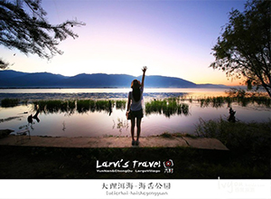
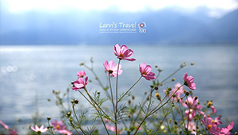
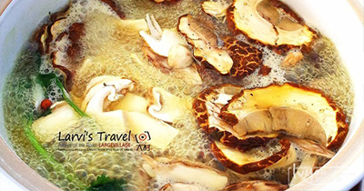
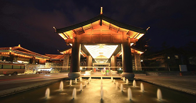
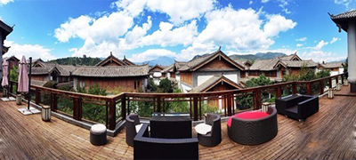
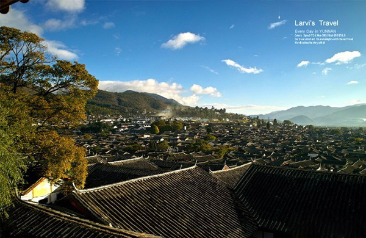
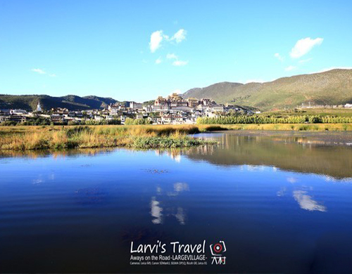

时间：2016.10
天数：3天
人均：1000-3000（元）
香格里拉
香格里拉
云南记忆
大理古城与洱海环湖
丽江与束河
香格里拉


D第一天
大理古城与洱海环湖
离开莫舍所在的下末南村，开车来到大理古城，差不多20分钟左右就到了，古城区停车略微麻烦，话说回来，古城里值得逛的地方其实也不错，可以忽略不计，我们就是奔着吃美食，菌菇火锅而来的。
续
西海镇——青海省海北藏族自治州州府新址——西海镇设在海晏县境内，位于湟水源头、海晏盆地的金银滩草原，原系中国第一个核武器研制基地，这块鲜为人知的神秘禁区， 孕育了新中国第一颗原子弹、氢弹，为打破国际敌对势力的核讹诈，振军威，扬国威作出了不朽的功绩。


D第二天
丽江与束河
离开我们非常喜欢的洱海边与喜洲古镇，我们的下一个目的地是丽江，方式是乘坐火车。



续
从大理到丽江可选择乘火车或大巴，火车每天从上午4点多到下午3点多共有7个班次，车程2.5小时左右，票价从34-111元不等，如果选择乘坐火车建议乘坐上午9:15那一班，到达丽江刚好中午。我们比较懒，起不了早，所以还是乘坐了下午三点多的K9619次列车，不过时间倒更快。
D第三天
香格里拉寻找N'skitchen
香格里拉（Shangri-la）藏语意为“心中的日月”，位于云南省西北部、青藏高原横断山区腹地，滇、川、藏三省区交界地，也是世界自然遗产“三江并流”景区所在地。
续
“甸”，似为彝语，意为“坝子”、“平地”。一说中甸系纳西语，为“土地”的音译，意为“酋长住地”或“饲养牦犏牛的地方”。1933年，詹姆斯·希尔顿在其长篇小说《失去的地平线》中，首次描绘了一个远在东方群山峻岭之中的永恒和平宁静之地“香格里拉”。

选择用户头像：
评论内容为200字以内……
呀，呼伦贝尔，早上起来第一件事就是，再！去！一！次！敖！鲁！古！雅！实在是太喜欢这里了，充满着森林感的民族特色，还有神秘而温顺的鹿鹿。